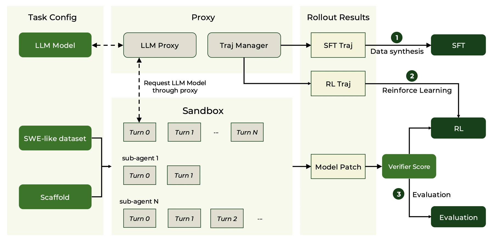
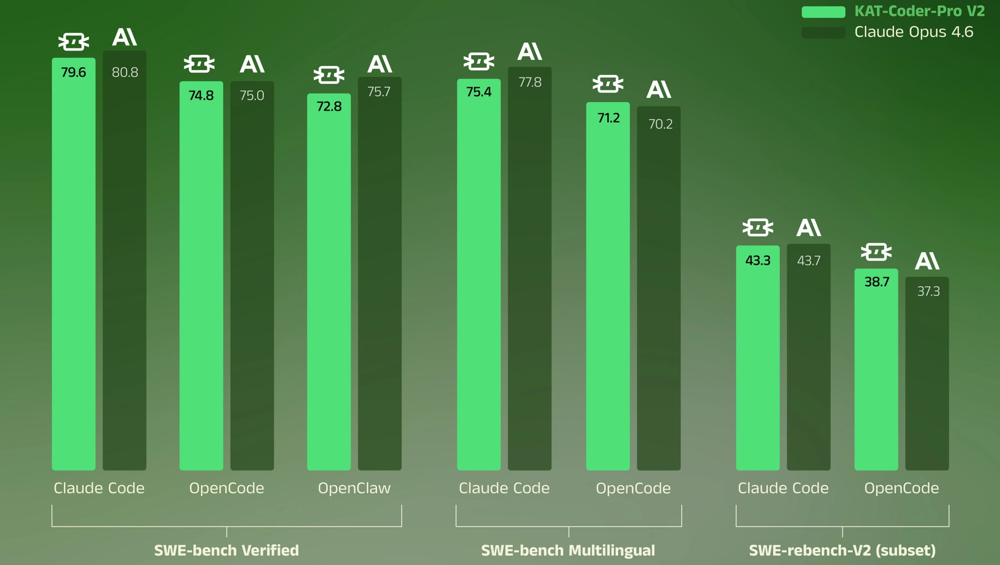

A coding agent needs software engineering, web coding, terminal operation, web search and general reasoning. Improving these together can cause interference, and success in one agent framework may not transfer to another.
编程智能体需要软件工程、网页编程、终端操作、网页搜索和通用推理等能力。共同优化可能引发能力干扰，在某个框架中有效的行为也不一定能迁移到其他框架。
KAT-Coder V2 approaches this as a training-sequence problem: allow specialized behavior to develop first, then bring it together in a model that must operate across different execution frameworks.
KAT-Coder V2 从训练顺序切入：先让专门能力充分发展，再将其整合到需要适应不同执行框架的模型中。
Specializing before unifying先专精，再统一
The Specialize-then-Unify recipe first trains five domain experts, then merges their capabilities through on-policy distillation. KwaiEnv provides scalable execution environments; MCLA and Tree Training address reinforcement-learning stability and redundant trajectory computation.
Specialize-then-Unify 先分别训练五个领域专家，再通过在线策略蒸馏整合能力。KwaiEnv 提供可扩展执行环境；MCLA 与 Tree Training 分别改善强化学习稳定性和轨迹计算冗余。
The five experts encounter different tool interfaces and reward signals, which is precisely why specialization can help. The unification stage must preserve useful behaviors without averaging away their distinctions. On-policy distillation trains the student using trajectories relevant to its own behavior, while scalable sandbox infrastructure makes long interactions feasible. The resulting recipe joins a learning problem with an execution problem: neither a reward function nor a model checkpoint alone defines the agent.
五个专家面对不同工具接口与奖励信号，这正是专门训练可能有效的原因。统一阶段需要保留各自有效行为，而不是抹平差异；在线策略蒸馏利用与学生自身行为相关的轨迹训练，可扩展沙箱则支撑长交互。由此，学习问题与执行问题被联系起来，单独的奖励函数或模型权重都不能完整定义智能体。
{kind=link}

Testing across agent frameworks跨智能体框架进行评测
Cross-scaffold evaluation runs comparable software-engineering tasks through Claude Code, OpenCode and OpenClaw. Separate agent benchmarks test execution beyond repository repair. The report also examines frontend aesthetics and general tasks. Together these checks ask whether distilled experts form one usable agent across interfaces, rather than a collection of isolated benchmark specialists with incompatible interaction habits.
跨框架评测通过 Claude Code、OpenCode、OpenClaw 运行软件工程任务，独立的智能体基准检验仓库修复之外的执行能力，并进一步考察前端美观和通用任务。组合评测关注的是专家蒸馏后能否形成跨接口可用的统一智能体，而非交互习惯不兼容的单项基准专家集合。
Model evaluations模型评测
Published results, with the evaluation setting kept alongside each comparison. Scores are percentages; higher is better. Bold marks the highest reported value in each row, including ties.保留原始评测条件；分数单位为百分比，越高越好。粗体表示每行已报告数值中的最高值（含并列）。
| Benchmark | KAT-Coder V2 | Claude Opus 4.6 |
|---|---|---|
| SWE-bench VerifiedClaude Code | 79.6% | 80.8%* |
| SWE-bench VerifiedOpenCode | 74.8% | 75% |
| SWE-bench VerifiedOpenClaw | 72.8% | 75.7% |
| SWE-bench MultilingualClaude Code | 75.4% | 77.8%* |
| SWE-bench MultilingualOpenCode | 71.2% | 70.2% |
| SWE-rebench-V2Subset · Claude Code | 43.3% | 43.7% |
| SWE-rebench-V2Subset · OpenCode | 38.7% | 37.3% |
Technical report v1, Table 2. Starred Opus scores (80.8*, 77.8*) are quoted from Anthropic; other results were evaluated on KwaiEnv. Each row retains its scaffold, because the harness changes the measured outcome. Source data
| Benchmark | KAT-Coder V2 | GLM-5 | MiniMax M2.7 | Claude Opus 4.6 | GPT-5.4 | Gemini 3.1 Pro |
|---|---|---|---|---|---|---|
| PinchBenchBest score | 88.7% | 86.4% | 87.1% | 87.4% | 90.5% | 86.7% |
| PinchBenchAverage score | 81.9% | 80.3% | 81.8% | 82.3% | 81.6% | 75.9% |
| Claw-EvalPass^3 | 55.6% | 57.7% | 51.9% | 66.3% | 66.3% | 50% |
| Claw-EvalAverage score | 73.4% | 73% | 70.7% | 79.3% | 80.6% | 74.2% |
Technical report v1, Table 3. OpenClaw evaluations; peer results were retrieved from PinchBench and Claw-Eval on March 25, 2026. Best and average scores are distinct metrics. Source data
| Benchmark | KAT-Coder V2 | GLM-5 | MiniMax M2.7 | Claude Opus 4.6 | GPT-5.4 | Gemini 3.1 Pro |
|---|---|---|---|---|---|---|
| Terminal-Bench HardTerminal reasoning | 46.8% | 43.2% | 39.4% | 46.2% | 57.6% | 53.8% |
| τ²-Bench TelecomTool use | 93.9% | 98.2% | 84.8% | 92.1% | 91.5% | 95.6% |
| AA-LCRLong-context reasoning | 68% | 63.3% | 68.7% | 70.7% | 74% | 72.7% |
| IFBenchInstruction following | 67% | 72.3% | 75.7% | 53.1% | 73.9% | 77.1% |
Technical report v1, Table 5. KAT results use KwaiEnv; peer results come from Artificial Analysis, retrieved March 25, 2026. These are reported comparisons, not a uniform re-run of all models. Source data
| Benchmark | KAT-Coder V2 | GLM-5 | Kimi K2.5 |
|---|---|---|---|
| Landing PageReport evaluation score | 59.8% | 57.6% | 54.6% |
| SlidesReport evaluation score | 57.6% | 42.8% | 34.8% |
| Data VisualizationReport evaluation score | 67.6% | 42.4% | 46% |
Technical report v1, Table 4. Frontend generation evaluation; these scores are separate from repository issue-resolution benchmarks. Source data
Capabilities across frameworks and tasks跨框架与跨任务的能力
Changing the agent scaffold changes the measured result. KAT-Coder V2 reaches 79.6 on SWE-bench Verified with Claude Code, 74.8 with OpenCode and 72.8 with OpenClaw. The corresponding Opus 4.6 values are 80.8, 75.0 and 75.7; the first is quoted from Anthropic, while the others are KwaiEnv evaluations.
切换智能体框架会改变测得的结果。KAT-Coder V2 在 Claude Code、OpenCode 和 OpenClaw 中的 SWE-bench Verified 分别为 79.6、74.8 和 72.8。Opus 4.6 对应为 80.8、75.0 和 75.7；其中第一项引用自 Anthropic，其余为 KwaiEnv 评测。
The broader tables show what this coding result does not capture. On PinchBench, KAT’s best score is 88.7 and its average is 81.9. Claw-Eval reports 55.6 for Pass^3 and 73.4 for average score, so reliability and average performance should remain separate. General-task results span terminal reasoning, telecom tool use, long-context reasoning and instruction following. The original comparison mixes KAT measurements with published peer results, which the notes preserve.
更广泛的表格展示了编程单项分数未覆盖的能力。KAT 在 PinchBench 的最佳分为 88.7、平均分为 81.9；Claw-Eval 的 Pass^3 为 55.6、平均分为 73.4，因此可靠性指标与平均表现应分别阅读。通用任务覆盖终端推理、电信工具使用、长上下文推理与指令遵循。原报告结合了 KAT 的实测数据和同行发布的数据，表下注释保留了这一差异。
{kind=link}

Capability fusion is only part of the problem能力融合只是问题的一部分
Specialization provides a way to make progress on heterogeneous tasks without forcing every training signal into one objective immediately. Distillation then becomes the test of whether those gains coexist. The report’s cross-framework results support that direction, but each deployment still needs to account for its own tools, permissions and failure recovery, which benchmark success alone does not fully specify.
先专门化，使异质任务不必立即挤进同一训练目标；随后通过蒸馏检验各项收益能否共存。跨框架结果支持了这一路线，但具体部署仍需考虑自身的工具、权限与失败恢复机制，这些内容不能仅由基准成功率完全确定。
Paper & authors论文与作者
Cite this work
@misc{li2026katcoderv2technicalreport,
title = {KAT-Coder-V2 Technical Report},
author = {Fengxiang Li
and Han Zhang
and Haoyang Huang
and Jinghui Wang
and Jinhua Hao
and Kun Yuan
and Mengtong Li
and Minglei Zhang
and Pengcheng Xu
and Wenhao Zhuang
and Yizhen Shao
and Zongxian Feng
and Can Tang
and Chao Wang
and Chengxiao Tong
and Fan Yang
and Gang Xiong
and Haixuan Gao
and Han Gao
and Hao Wang
and Haochen Liu
and Hongliang Sun
and Jiabao Li
and Jingwen Chang
and Jun Du
and Junyi Peng
and Leizhen Cui
and Meimei Jing
and Mingqi Wu
and Shangpeng Yan
and Shaotong Qi
and Suzhe Xu
and Wenxuan Zhao
and Xianda Sun
and Xuan Xie
and Yanbo Wang
and Yao Xia
and Yinghan Cui
and Yingpeng Chen
and Yong Wang
and Yuze Shi
and Zhiwei Shen
and Ziyu Wang
and Ming Sun
and Lin Ye
and Bin Chen},
year = {2026},
eprint = {2603.27703},
archivePrefix = {arXiv},
primaryClass = {cs.CL},
url = {https://arxiv.org/abs/2603.27703}
}